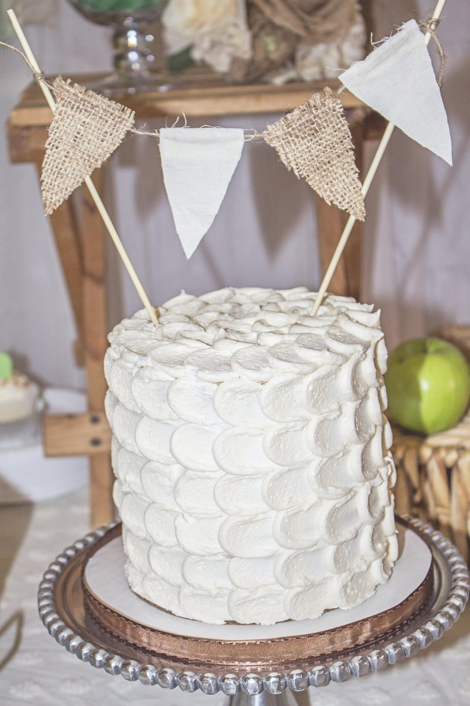

October 31, 2026 · By Pixel Punk Studio
A store-bought word search is fun, but it can't hold your family's names, this week's spelling words or the inside jokes from a friend's 60th birthday. A homemade one can, and it takes about fifteen minutes with a pencil and a sheet of graph paper. Here is how to make a word search that is fun to solve, the right size for the person who will get it, and easy to check.
What you need
- Graph paper with large squares, or plain paper and a ruler to draw your own grid.
- A pencil and an eraser for placing words, and a fine black pen for the final version.
- A list of 10 to 20 words on one theme: names, places, hobbies, holiday words or a class's vocabulary.
8 steps to make a word search
- Choose a theme and your words. Keep them on one subject so the list makes sense. For young children, pick 6 to 10 short words; for adults, 15 to 20.
- Pick the grid size. About 10 x 10 squares for kids and 15 x 15 for adults. The grid should be at least two squares longer than your longest word.
- Make the squares big enough. For seniors or tired eyes, use squares of at least half an inch and write capital letters that fill them. Big letters change everything.
- Place the longest words first, in pencil. Mix directions: across and down for kids, add diagonals for adults, and save backwards words for puzzle fans.
- Let a few words cross at a shared letter. It saves space and makes the grid look like a real puzzle.
- Take a photo of the grid now. Before you fill the gaps, this picture is your answer key.
- Fill the empty squares with random letters, mostly ones that already appear in your words, so the answers don't stand out. Read the rows once to be sure you didn't spell anything silly.
- Ink it and test it. Go over the letters in pen, write the word list under the grid, and ask someone to solve it before the big day.
Ideas that make it more fun
- Hide a secret message. Instead of random letters, fill the leftover squares in order with a short message ("happy birthday grandma"). Solvers read it once every word is found.
- Make it personal. Use the person's name as the title and add small drawings around the border.
- Print on card or slip it in a sheet protector so it can be solved again with a dry-erase marker.
- Make one for each table at a party or a family reunion and race to finish first.

Short on time? Print one instead
If the party is tonight, our free printables are ready in seconds: a bug word search for kids, a large print Christmas puzzle for adults and a retirement word search, each with its answer key. When you want a whole book of puzzles, Cozy Christmas Word Search, Bug Hunt Word Search and Retirement Word Search have dozens more.